<div class="application-header"
     ng-show="current_state !== 'organizations.registration'"
     ng-controller="HeaderCtrl">
  <i class="icon ion-navicon"
     ng-show="current_state !== 'organizations.registration' && !menu_open"
     ng-click="open()">
  </i>
  <i class="icon ion-navicon"
     ng-show="current_state !== 'organizations.registration' && menu_open"
     ng-click="close()">
  </i>
  <div class="headerpar"
       scroll-watch="{from: 0, to: -1, stage: 'centered-container'}"
       sw-class="{red: $offsetTop > 57}">
    <div class="headerimg"
         scroll-watch="{from: 0, to: -1, stage: 'centered-container'}"
         sw-class="{black: $offsetTop > 77}">
      
    </div>
    <input class="searchbar"
           type="text"
           ng-model="search_query"
           ng-keypress="search()"
           placeholder="Search for anything...">
    <div ng-show="searching">
      <md-card class="searchcard">
        <md-card-content>
          <div ng-show="!loaded">
            <md-progress-circular md-mode="indeterminate"></md-progress-circular>
          </div>
          <div ng-show="loaded">
            <md-list>
              <md-list-item class="md-2-line"
                            ng-repeat="result in results"
                            ng-click="openModal(result)">
                {{result.img}}
                <div class="md-list-item-text">
                  <h3>{{result.title}}</h3>
                  <p>{{result.type}}</p>
                </div>
              </md-list-item>
            </md-list>
          </div>
        </md-card-content>
      </md-card>
    </div>
  </div>

  <md-fab-speed-dial class="helpbar" md-open="false" md-direction="down"
                     ng-class="'md-fling'">
    <md-fab-trigger>
      <div class="helptrigger">?</div>
    </md-fab-trigger>
    <md-fab-actions style="position:relative;left:-50px;">
      <md-button
        aria-label="twitter"
        target="_blank"
        href="https://volu.happyfox.com/home"
        class=" md-raised md-mini helpb">
        Go to Support Forum
      </md-button>
      <md-button aria-label="facebook"
                 class="md-raised md-mini helpb"
                 ng-click="supportModal('md')">
        Give Us Feedback
      </md-button>
    </md-fab-actions>
  </md-fab-speed-dial>
</div>


<div style="width:100vw;height:250px;background-color:#03a9f5;position:fixed;z-index:-50;"></div>
